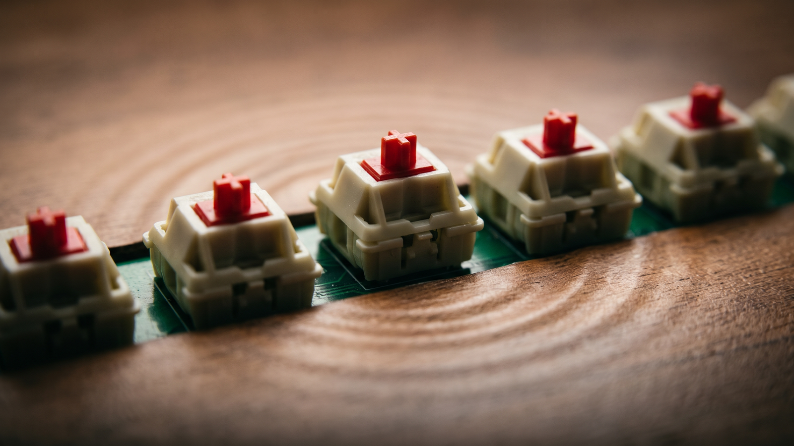

What it does
- Minimal CPU and memory usage, instant keystroke response.
- Less than 5 MB in size, cross-platform compatibility.
- Customizable sounds to suit your preferences: record and add your own sound packs.
More about its performance comparison and under the hood: the write-up.

Install
Supports Windows (64-bit/ARM64), macOS (Intel/Apple M1/M2), and Linux (64-bit/ARM64/ARMv7).
Visit the release page to download the appropriate installation package.
Custom sounds
Want to create your own keyboard sounds? Check out the Custom Sounds Guide for detailed instructions on recording, processing, and adding your own sound packs to KeyEcho.
Development
Prerequisites: Rust and Cargo, and pnpm. Then, from the project root:
# Install dependencies $ pnpm install # Development $ pnpm dev # Build $ pnpm build
To run the Rust backend separately, run cargo run in src-tauri, then start the frontend with pnpm web:dev from the root of the project.